일반기계기사 (2018-09-15 기출문제)
1과목: 재료역학
1. 다음 단면에서 도심의 y축 좌표는 얼마인가?
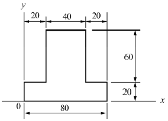
- 30
- 34
- 40
- 44
(정답률: 60%)

2. 그림과 같이 원형 단면을 갖는 외팔보에 발생하는 최대 굽힙응력 σb는?
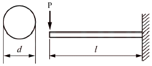
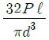
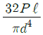
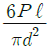
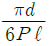
(정답률: 66%)
3. 양단이 힌지로 된 길이 4m인 기둥의 임계하중을 오일러 공식을 사용하여 구하면 약 몇 N인가? (단, 기둥의 세로탄성계수 E=200GPa이다.)
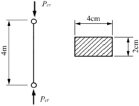
- 1645
- 3290
- 6580
- 13160
(정답률: 61%)
4. 길이가 50cm인 외팔보의 자유단에 정적인 힘을 가하여 자유단에서의 처짐량이 1cm가 되도록 외팔보를 탄성변형 시키려고 한다. 이때 필요한 최소한의 에너지는 약 몇 J인가? (단, 외팔보의 세로탄성계수는 200GPa, 단면은 한 변의 길이가 2cm인 정사각형이라고 한다.)
- 3.2
- 6.4
- 9.6
- 12.8
(정답률: 33%)
5. 그림에서 클램프(clamp)의 압축력이 P=5kN일 때 m-n 단면의 최소두께 h를 구하면 약 몇 cm인가? (단, 직사각형 단면의 폭 b=10mm, 편심거리 e=50mm, 재료의 허용응력 σω=200MPa이다.)
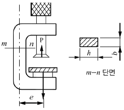
- 1.34
- 2.34
- 2.86
- 3.34
(정답률: 42%)
6. 강선의 지름이 5mm이고 코일의 반지름이 50mm인 15회 감긴 스프링이 있다. 이 스프링에 힘이 작용할 때 처짐량이 50mm일 때, P는 약 몇 N인가? (단, 재료의 전단탄성계수는 G=100Gpa이다.)
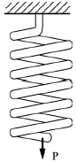
- 18.32
- 22.08
- 26.04
- 28.43
(정답률: 55%)
7. 지름 d인 강봉의 지름을 2배로 했을 때 비틀림 강도는 몇 배가 되는가?
- 2배
- 4배
- 8배
- 16배
(정답률: 55%)
8. 그림과 같이 단순 지지보가 B점에서 반시계 방향의 모멘트를 받고 있다. 이때 최대의 처짐이 발생하는 곳은 A점으로부터 얼마나 떨어진 거리인가?
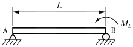
- L/2
- L/√2
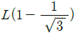
- L/√3
(정답률: 46%)
9. 포아송(Poission)비가 0.3인 재료에서 세로탄성계수(E)와 가로탄성계수(G)의 비(E/G)는?
- 0.15
- 1.5
- 2.6
- 3.2
(정답률: 63%)
10. 그림과 같은 양단 고정보에서 고정단 A에서 발생하는 굽힘 모멘트는? (단, 보의 굽힘 강성계수는 EI이다.)
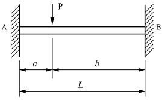
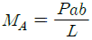
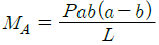
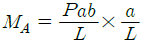
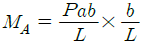
(정답률: 46%)
11. 그림과 같은 선형 탄성 균일단면 외팔보의 굽힘 모멘트 선도로 가장 적당한 것은?
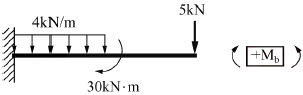
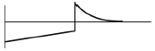
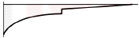
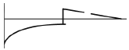
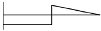
(정답률: 56%)
12. 다음 단면의 도심 축(X-X)에 대한 관성모멘트는 약 몇 m4인가?
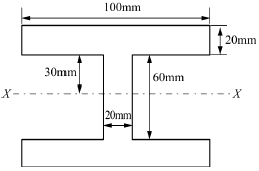
- 3.627×10-6
- 4.627×10-7
- 4.933×10-7
- 6.893×10-6
(정답률: 54%)
13. 한 변의 길이가 10mm인 정사각형 단면의 막대가 있다. 온도를 60℃ 상승시켜서 길이가 늘어나지 않게 하기위해 8kN의 힘이 필요할 때 막대의 선팽창계수(α)는 약 몇 ℃-1인가? (단, 탄성계수는 E=200GPa이다.)
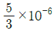
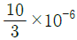
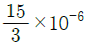
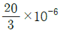
(정답률: 63%)
14. 그림과 같은 단순 지지보에서 길이(ℓ)는 5m, 중앙에서 집중하중 P가 작용할 때 최대처짐이 43mm라면 이때 집중하중 P의 값은 약 몇 kN인가? (단, 보의 단면(폭(b)×높이(h)=5cm×12cm), 탄성계수 E=210GPa로 한다.)
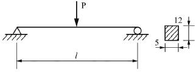
- 50
- 38
- 25
- 16
(정답률: 61%)
15. 길이가 ℓ인 외팔보에서 그림과 같이 삼각형 분포하중을 받고 있을 때 최대 전단력과 최대 굽힘모멘트는?
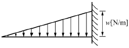
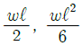
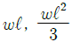
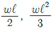
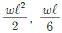
(정답률: 60%)
16. 볼트에 7200N의 인장하중을 작용시키면 머리부에 생기는 전단응력은 몇 MPa인가?
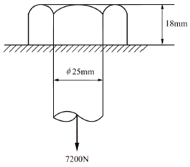
- 2.55
- 3.1
- 5.1
- 6.25
(정답률: 59%)
17. 400rpm으로 회전하는 바깥지름 60mm, 안지름 40mm인 중공 단면축의 허용 비틀림 각도가 1°일 때 이 축이 전달할 수 있는 동력의 크기는 약 몇 kW인가? (단, 전단 탄성계수 G=80GPa, 축 길이 L=3m이다.)
- 15
- 20
- 25
- 30
(정답률: 58%)
18. 그림과 같은 구조물에 1000N의 물체가 매달려 있을 때 두 개의 강선 AB와 AC에 작용하는 힘의 크기는 약 몇 N인가?
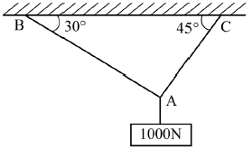
- AB = 732, AC = 897
- AB = 707, AC = 500
- AB = 500, AC = 707
- AB = 897, AC = 732
(정답률: 61%)
19. 그림과 같이 스트레인 로제트(strain rosette)를 45°로 배열한 경우 각 스트레인 게이지에 나타나는 스트레인량을 이용하여 구해지는 전단 변형률 γxy는?
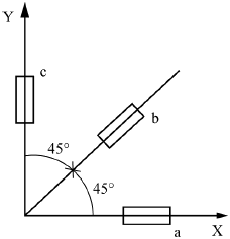
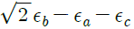
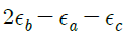
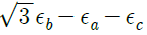
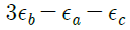
(정답률: 28%)
20. 단면적이 4cm2인 강봉에 그림과 같이 하중이 작용할 때 이 봉은 약 몇 cm 늘어나는가? (단, 세로탄성계수 E=210GPa이다.)
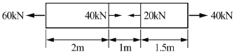
- 0.80
- 0.24
- 0.0028
- 0.015
(정답률: 52%)
2과목: 기계열역학
21. 그림의 증기압축 냉동사이클(온도(T)-엔트로피(s) 선도)이 열펌프로 사용될 때의 성능계수는 냉동기로 사용될 때의 성능계수의 몇 배인가? (단, 각 지점에서의 엔탈피는 h1=180kJ/kg, h2=210kJ/kg, h3=h4=50kJ/kg이다.)
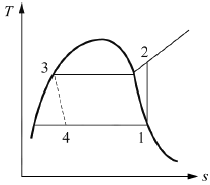
- 0.81
- 1.23
- 1.63
- 2.12
(정답률: 53%)
22. 물질이 액체에서 기체로 변해 가는 과정과 관련하여 다음 설명 중 옳지 않은 것은?
- 물질의 포화온도는 주어진 압력 하에서 그 물질의 증발이 일어나는 온도이다.
- 물의 포화온도가 올라가면 포화압력도 올라간다.
- 액체의 온도가 현재 압력에 대한 포화온도보다 낮을 때 그 액체를 압축액 또는 과냉각액이라 한다.
- 어떤 물질이 포화온도 하에서 일부는 액체로 존재하고 일부는 증기로 존재할 때, 전체 질량에 대한 액체 질량의 비를 건도로 정의한다.
(정답률: 49%)
23. 공기 1kg을 1MPa, 250℃의 상대로부터 등온과정으로 0.2MPa까지 압력 변화를 할 때 외부에 대하여 한 일은 약 몇 kJ인가? (단, 공기는 기체상수가 0.287kJ/(kgㆍK)인 이상기체이다.)
- 157
- 242
- 313
- 465
(정답률: 58%)
24. 100kPa의 대기압 하에서 용기 속 기체의 진공압이 15kPa이었다. 이 용기 속 기체의 절대압력은 약 몇 kPa인가?
- 85
- 90
- 95
- 115
(정답률: 59%)
25. 다음 열역학 성질(상태량)에 대한 설명 중 옳은 것은?
- 엔탈피는 점함수(point function)이다.
- 엔트로피는 비가역과정에 대해서 경로함수이다.
- 시스템 내 기체가 열평형(thermal equilibrium) 상태라 함은 압력이 시간에 따라 변하지 않는 상태를 말한다.
- 비체적은 종량적(extensive) 상태량이다.
(정답률: 44%)
26. 피스톤-실린더로 구성된 용기 안에 이상기체 공기 1kg이 400K, 200kPa 상태로 들어있다. 이 공기가 300K의 충분히 큰 주위로 열을 빼앗겨 온도가 양쪽 다 300K가 되었다. 그동안 압력은 일정하다고 가정하고, 공기의 정압 비열은 1.004kJ/(kgㆍK)일 때 공기와 주위를 합친 총 엔트로피 증가량은 약 몇 kJ/K인가?
- 0.0229
- 0.0458
- 0.1674
- 0.3347
(정답률: 23%)
27. 폴리트로프 지수가 1.33인 기체가 폴리트로프 과정으로 압력이 2배 되도록 압축된다면 절대온도는 약 몇배가 되는가?
- 1.19배
- 1.42배
- 1.85배
- 2.24
(정답률: 59%)
28. 비열이 0.475kJ/(kgㆍK)인 철 10kg을 20℃에서 80℃로 올리는데 필요한 열량은 몇 kJ인가?
- 222
- 252
- 285
- 315
(정답률: 64%)
29. 압축비가 7.5이고, 비열비가 1.4인 이상적인 오토사이클의 열효율은 약 몇 %인가?
- 55.3
- 57.6
- 48.7
- 51.2
(정답률: 63%)
30. 정압비열이 0.8418kJ/(kgㆍK)이고 기체상수가 0.1889kJ/(kgㆍK)인 이상기체의 정적비열은 약 몇 kJ/(kgㆍK)인가?
- 4.456
- 1.220
- 1.031
- 0.653
(정답률: 61%)
31. 산소(O2) 4kg, 질소(N2)6kg, 이산화탄소(CO2)2kg으로 구성된 기체혼합물의 기체상수 kJ/(kgㆍK)는 약 얼마인가?
- 0.328
- 0.294
- 0.267
- 0.241
(정답률: 33%)
32. 열기관이 1100K인 고온열원으로부터 1000kJ의 열을 받아서 온도가 320K인 저온열원에서 600KJ의 열을 방출한다고 한다. 이 열기관이 클라우지우스 부등식
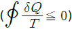
을 만족하는지 여부와 동일온도 범위에서 작동하는 카르노 열기관과 비교하여 효율은 어떠한가?- 클라우지우스 부등식을 만족하지 않고, 이론적인 카르노열기관과 효율이 같다.
- 클라우지우스 부등식을 만족하지 않고, 이론적인 카르노열기관보다 효율이 크다.
- 클라우지우스 부등식을 만족하고, 이론적인 카르노열기관과 효율이 같다.
- 클라우지우스 부등식을 만족하고, 이론적인 카르노열기관보다 효율이 작다.
(정답률: 52%)
33. 실린더 내부의 기체 압력을 150kPa로 유지하면서 체적을 0.⑤m3에서 0.1m3까지 증가시킬 때 실린더가 한 일은 약 몇 kJ인가?
- 1.5
- 15
- 7.5
- 75
(정답률: 63%)
34. 4kg의 공기를 압축하는데 300kJ의 일을 소비함과 동시에 110kJ의 열량이 방출되었다. 공기온도가 초기에는 20℃이었을 때 압축 후의 공기온도는 약 몇 ℃인가? (단, 공기는 정적비열이 0.716 kJ/(kgㆍK)인 이상기체로 간주한다.)
- 78.4
- 71.7
- 93.5
- 86.3
(정답률: 55%)
35. 체적이 200L인 용기 속에 기체가 3kg 들어있다. 압력이 1MPa, 비내부에너지가 219kJ/kg일 때 비엔탈피는 약 몇 kJ/kg인가?
- 286
- 258
- 419
- 442
(정답률: 38%)
36. 위치에너지의 변화를 무시할 수 있는 단열노즐 내를 흐르는 공기의 출구속도가 600m/s이고 노즐 출구에서의 엔탈피가 입구에 비해 179.2kJ/kg 감소할 때 공기의 입구속도는 약 몇 m/s인가?
- 16
- 40
- 225
- 425
(정답률: 50%)
37. 그림과 같은 압력(P)-부피(V) 선도에서 T1=561K, T2=1010K, T3=690K, T4=383K인 공기(정압비열 1kJ/(kgㆍK)를 작동유체로 하는 이상적인 브레이턴 사이클(Brayton cycle)의 열효율은?
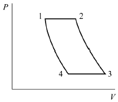
- 0.388
- 0.444
- 0.316
- 0.412
(정답률: 51%)
38. 효율이 30%인 증기동력 사이클에서 1kW의 출력을 얻기 위하여 공급되어야 할 열량은 약 몇 kW인가?
- 1.25
- 2.51
- 3.33
- 4.90
(정답률: 64%)
39. 질량이 4kg인 단열된 강재 용기 속에 온도 25℃의 물 18L가 들어가 있다. 이 속에 200℃의 물체 8kg을 넣었더니 열평형에 도달하여 온도가 30℃가 되었다. 물의 비열은 4.187kJ/(kgㆍK)이고, 강재의 비열은 0.4648kJ/(kgㆍK)일 때 이 물체의 비열은 약 몇 kJ/(kgㆍK)인가? (단, 외부와의 열교환은 없다고 가정한다.)
- 0.244
- 0.267
- 0.284
- 0.302
(정답률: 36%)
40. 엔트로피에 관한 설명 중 옳지 않은 것은?
- 열역학 제2법칙과 관련한 개념이다.
- 우주 전체의 엔트로피는 증가하는 방향으로 변화한다.
- 엔트로피는 자연현상의 비가역성을 측정하는 척도이다.
- 비가역현상은 엔트로피가 감소하는 방향으로 일어난다.
(정답률: 57%)
3과목: 기계유체역학
41. 지름 200mm 원형관에 비중 0.9, 점성계수 0.52poise인 유체가 평균속도 0.48m/s로 흐를 때 유체흐름의 상태는? (단, 레이놀즈 수(Re)사 2100≤Re≤4000일 때 천이 구간으로 한다.)
- 층류
- 천이
- 난류
- 맥동
(정답률: 60%)
42. 시속 800km의 속도로 비행하는 제트기가 400m/s의 상대 속도로 배기가스를 노즐에서 분출할 때의 추진력은? (단, 이때 흡기량은 25kg/s이고, 배기되는 연소가스는 흡기량에 비해 2.5% 증가하는 곳으로 본다.)
- 3922N
- 4694N
- 4875N
- 6346N
(정답률: 48%)
43. 온도 25℃인 공기에서의 음속은 약 몇 m/s인가? (단, 공기의 비열비는 1.4, 기체상수는 287J/(kgㆍK) 이다.)
- 312
- 346
- 388
- 433
(정답률: 60%)
44. 다음 4가지의 유체 중에서 점성계수가 가장 큰 뉴턴 유체는?
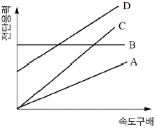
- A
- B
- C
- D
(정답률: 57%)
45. 함수 f(a, V, t, ν, L)=0을 무차원 변수로 표시하는데 필요한 독립 무차원수 π는 몇 개인가? (단, a는 음속, V는 속도, t는 시간, ν는 동점성계수, L은 특성길이다.)
- 1
- 2
- 3
- 4
(정답률: 53%)
46. 수두 차를 읽어 관내 유체의 속도를 측정할 때 U자관(U tube) 액주계 대신 역 U자관(inverted U tube)액주계가 사용되었다면 그 이유로 가장 적절한 것은?
- 계기 유체(gauge fluid)의 비중이 관내 유체보다 작기 때문에
- 계기 유체(gauge fluid)의 비중이 관내 유체보다 크기 때문에
- 계기 유체(gauge fluid)의 점성계수가 관내 유체보다 작기 때문에
- 계기 유체(gauge fluid)의 점성계수가 관내 유체보다 크기 때문에
(정답률: 41%)
47. 안지름이 50cm인 원관에 물이 2m/s의 속도로 흐르고 있다. 역학적 상사를 위해 관성력과 점성력만을 고려하여 1/5로 축소된 모형에서 같은 물로 실험할 경우 모형에서의 유량은 약 몇 L/s인가? (단, 물의 동점성계수는 1×10-6m2/s이다.)
- 34
- 79
- 118
- 256
(정답률: 55%)
48. 다음 그림에서 벽 구멍을 통해 분사되는 물의 속도(V)는? (단, 그림에서 S는 비중을 나타낸다.)
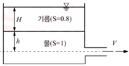
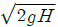
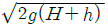
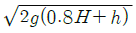
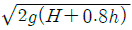
(정답률: 63%)
49. 정지 유체 속에 잠겨 있는 평면이 받는 힘에 관한 내용 중 틀린 것은?
- 깊게 잠길수록 받는 힘이 커진다.
- 크기는 도심에서의 압력에 전체 면적을 곱한 것과 같다.
- 수평으로 잠긴 경우, 압력중심은 도심과 일치한다.
- 수직으로 잠긴 경우, 압력중심은 도심보다 약간 위쪽에 있다.
(정답률: 59%)
50. 다음 물리량을 질량, 길이, 시간의 차원을 이용하여 나타내고자 한다. 이 중 질량의 차원을 포함하는 물리량은?
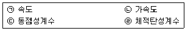
- ㉠
- ㉡
- ㉢
- ㉣
(정답률: 58%)
51. 극좌표계(γ, θ)로 표현되는 2차원 포텐셜유동(potential flow)에서 속도포텐셜(velocity potential, ø이 다음과 같을 때 유동함수(stream function, Ψ)로 가장 적절한 것은? (단, A, B, C는 상수이다.)
-
(정답률: 18%)
52. 지름 2mm인 구가 밀도 0.4kg/m3, 동점성계수 1.0×10-4m2/s인 기체속을 0.03m/s로 운동한다고 하면 항력은 약 몇 N인가?
- 2.26×10-8
- 3.52×10-7
- 4.54×10-8
- 5.86×10-7
(정답률: 48%)
53. 60N의 무게를 가진 물체를 물속에서 측정하였을 때 무게가 10N이었다. 이 물체의 비중은 약 얼마인가? (단, 물속에서 측정할 시 물체는 완전히 잠겼다고 가정한다.)
- 1.0
- 1.2
- 1.4
- 1.6
(정답률: 43%)
54. 2차원 속도장이 다음 식과 같이 주어졌을 때 유선의 방정식은 어느 것인가? (단, 직각 좌표계에서 u, υ는 x, y방향의 속도 성분을 나타내며 C는 임의의 상수이다.)
- xy=C
- x/y=C
- x2y=C
- xy2=C
(정답률: 54%)
55. 물 펌프의 입구 및 출구의 조건이 아래와 같고 펌프의 송출 유량이 0.2m3/s이면 펌프의 동력은 약 몇 kW인가? (단, 손실은 무시한다.)
- 45.7
- 53.5
- 59.3
- 65.2
(정답률: 32%)
56. 경계층의 박리(separation)가 일어나는 주원인은?
- 압력이 증기압 이하로 떨어지기 때문에
- 유동방향으로 밀도가 감소하기 때문에
- 경계층의 두께가 0으로 수렴하기 때문에
- 유동과정에 역압력 구배가 발행하기 때문에
(정답률: 64%)
57. 안지름이 각각 2cm, 3cm인 두 파이프를 통하여 속도가 같은 물이 유입되어 하나의 파이프로 합쳐져서 흘러 나간다. 유출되는 속도가 유입속도와 같다면 유출 파이프의 안지름은 약 몇 cm인가?
- 3.61
- 4.24
- 5.00
- 5.85
(정답률: 56%)
58. 원관 내 완전발달 층류 유동에 관한 설명으로 옳지 않은 것은?
- 관 중심에서 속도가 가장 크다.
- 평균속도는 관 중심 속도의 절반이다.
- 관 중심에서 전단응력이 최대값을 갖는다.
- 전단응력은 반지름 방향으로 선형적으로 변화한다.
(정답률: 58%)
59. 안지름 0.1m의 물이 흐르는 관로에서 관 벽의 마찰손실수두가 물의 속도수두와 같다면 그 관로의 길이는 약 몇 m인가? (단, 관마찰계수는 0.03이다.)
- 1.58
- 2.54
- 3.33
- 4.52
(정답률: 58%)
60. 그림과 같이 용기에 물과 휘발유가 주입되어 있을 때, 용기 바닥면에서의 게이지압력은 약 몇 kPa인가? (단, 휘발유의 비중은 0.7이다.)
- 1.59
- 3.64
- 6.86
- 11.77
(정답률: 61%)
4과목: 기계재료 및 유압기기
61. 0℃ 이하의 온도로 냉각하는 작업으로 강의 잔류 오스테나이트를 마텐자이트로 변태시키는 것을 목적으로 하는 열처리는?
- 마퀜칭
- 마템퍼링
- 오스포밍
- 심랭처리
(정답률: 72%)
62. 다음 금속 중 자기변태점이 가장 높은 것은?
- Fe
- Co
- Ni
- Fe3C
(정답률: 40%)
63. 산화알루미늄(Al2O3) 등을 주성분으로 하며 철과 친화력이 없고, 열을 흡수하지 않으므로 공구를 과열시키지 않아 고속 정밀 가공에 적합한 공구의 재질은?
- 세라믹
- 인코넬
- 고속도강
- 탄소공구강
(정답률: 56%)
64. 구상흑연주철을 제조하기 위한 접종제가 아닌 것은?
- Mg
- Sn
- Ce
- Ca
(정답률: 57%)
65. 다음 조직 중 경도가 가장 낮은 것은?
- 페라이트
- 마텐자이트
- 시멘타이트
- 트루스타이트
(정답률: 66%)
66. 금속을 소성가공 할 때에 냉간가공과 열간가공을 구분하는 온도는?
- 변태온도
- 단조온도
- 재결정온도
- 담금질온도
(정답률: 69%)
67. 금속에서 자유도(F)를 구하는식으로 옳은 것은? (단, 압력은 일정하며, C : 성분, P : 상의수이다.)
- F=C-P+1
- F=C+P+1
- F=C-P+2
- F=C+P+2
(정답률: 48%)
68. 켈밋 합금(kelmet alloy)의 주요 성분으로 옳은 것은?
- Pb-Sn
- Cu-Pb
- Sn-Sb
- Zn-Al
(정답률: 49%)
69. 저탄소강 기어(gear)의 표면에 내마모성을 향상시키기 위해 붕소(B)를 기어 표면에 확산 침투시키는 처리는?
- 세러다이징(sherardizing)
- 아노다이징(anadizing)
- 보로나이징(boronizing)
- 칼로라이징(calorizing)
(정답률: 75%)
70. 60~70% Ni에 Cu를 첨가한 것으로 내열ㆍ내식성이 우수하므로 터빈 날개, 펌프 임펠러 등의 재료로 사용되는 합금은?
- Y 합금
- 모네메탈
- 콘스탄탄
- 문쯔메탈
(정답률: 39%)
71. 두 개의 유입 관로의 압력에 관계없이 정해진 출구 유량이 유지되도록 합류하는 밸브는?
- 집류 밸브
- 셔틀 밸브
- 적층 밸브
- 프리필 밸브
(정답률: 53%)
72. 유압펌프의 종류가 아닌 것은?
- 기어펌프
- 베인펌프
- 피스톤펌프
- 마찰펌프
(정답률: 65%)
73. 그림과 같은 유압 회로도에서 릴리프 밸브는?
- ⓐ
- ⓑ
- ⓒ
- ⓓ
(정답률: 70%)
74. 다음의 설명에 맞는 원리는?
- 보일의 원리
- 샤를의 원리
- 파스칼의 원리
- 아르키메데스의 원리
(정답률: 69%)
75. 유압펌프에 있어서 체적효율이 90%이고 기계효율이 80%일 때 유압펌프의 전효율은?
- 90%
- 88.8%
- 72%
- 23.7%
(정답률: 66%)
76. 다음 유압 기호는 어떤 밸브의 상세기호인가?
- 직렬형 유량조정 밸브
- 바이패스형 유량조정 밸브
- 체크밸브 붙이 유량조정 밸브
- 기계조작 가변 교축밸브
(정답률: 58%)
77. 그림과 같은 유압기호의 명칭은?
- 모터
- 필터
- 가열기
- 분류밸브 일반 필터기호
(정답률: 69%)
78. 동일 축상에 2개 이상의 펌프 작용 요소를 가지고, 각각 독립한 펌프 작용을 하는 형식의 펌프는?
- 다단 펌프
- 다련 펌프
- 오버 센터 펌프
- 가역회전형 펌프
(정답률: 38%)
79. 유압펌프에서 실제 토출량과 이론 토출량의 비를 나타내는 용어는?
- 펌프의 토크효율
- 펌프의 전효율
- 펌프의 입력효율
- 펌프의 용적효율
(정답률: 57%)
80. 다음 중 어큐뮬레이터 회로(accumulator circuit)의 특징에 해당되지 않는 것은?
- 사이클 시간 단축과 펌프 용령 저감
- 배관 파손 방지
- 서지압의 방지
- 맥동의 발생
(정답률: 61%)
5과목: 기계제작법 및 기계동력학
81. 스프링과 질량만으로 이루어진 1자유도 진동시스템에 대한 설명으로 옳은 것은?
- 질량이 커질수록 시스템의 고유진동수는 커지게 된다.
- 스프링 상수가 클수록 움직이기가 힘들어져서 진동 주기가 길어진다.
- 외력을 가하는 주기와 시스템의 고유주기가 일치하면 이론적으로는 응답변위는 무한대로 커진다.
- 외력의 최대 진폭의 크기에 따라 시스템의 응답 주기는 변한다.
(정답률: 44%)
82. 공 A가 υ0의 속도로 그림과 같이 정지된 공 B와 C지점에서 부딪힌다. 두 공 사이의 반발계수가 1이고 충돌각도가 θ일 때 충돌 후에 공 B의 속도의 크기는? (단, 두 공의 질량은 같고, 마찰은 없다고 가정한다.)
- 1/2υ0sinθ
- 1/2υ0cosθ
- υ0sinθ
- υ0cosθ
(정답률: 44%)
83. 그림에서 질량 100kg의 물체 A와 수평면 사이의 마찰계수는 0.3이며 물체 B의 질량은 30kg이다. 힘 Py의 크기는 시간(t[s])의 함수이며 Py[N]=15t2이다. t는 0s에서 물체 A가 오른쪽으로 2m/s로 운동을 시작한다면 t가 5s일 때 이 물체(A)의 속도는 약 몇 m/s인가?
- 6.81
- 7.22
- 7.81
- 8.64
(정답률: 23%)
84. 다음 그림은 시간(t)에 대한 가속도(α) 변화를 나타낸 그래프이다. 가속도를 시간에 대한 함수식으로 옳게 나타낸 것은?
- a=12-6t
- a=12+6t
- a=12-12t
- a=12+12t
(정답률: 61%)
85. 다음과 같은 운동방정식을 갖는 진동시스템에서 감쇠비(damping ratio)를 나타내는 식은?
(정답률: 59%)
86. 원판의 각속도가 5초 만에 0부터 1800rpm까지 일정하게 증가하였다. 이 때 원판의 각가속도는 몇 rad/s2인가?
- 360
- 60
- 37.7
- 3.77
(정답률: 56%)
87. 물체의 최대 가속도가 680cm/s2, 매분 480사이클의 진동수로 조화운동을 한다면 물체의 진동 진폭은 약 몇 mm인가?
- 1.8mm
- 1.2mm
- 2.4mm
- 2.7mm
(정답률: 30%)
88. 스프링 상수가 k인 스프링을 4등분하여 자른 후 각각의 스프링을 그림과 같이 연결하였을 때, 이 시스템의 고유 진동수(ωn)는 약 몇 rad/s인가?
(정답률: 51%)
89. 네 개의 가는 막대로 구성된 정사각 프레임이 있다. 막대 각각의 질량과 길이는 m과 b이고, 프레임은 ω의 각속도로 회전하고 질량 중심 G는 u의 속도로 병진운동하고 있다. 프레임의 병진운동 에너지와 회전운동에너지가 같아질 때 질량중심 G의 속도(u)는 얼마인가?
(정답률: 36%)
90. 20g의 탄환이 수평으로 1200m/s의 속도로 발사되어 정지해 있던 300g의 블록에 박힌다. 이 후 스프링에 발생한 최대 압축 길이는 약 몇 m인가? (단, 스프링상수는 200N/m이고 처음에 변형되지 않은 상태였다. 바닥과 블록 사이의 마찰은 무시한다.)
- 2.5
- 3.0
- 3.5
- 4.0
(정답률: 35%)
91. 강의 열처리에서 탄소(C)가 고용된 면심입방격자 구조의 γ철로서 매우 안정된 비자성체인 급냉조직은?
- 오스테나이트(Austenite)
- 마텐자이트(Martensite)
- 트루스타이트(Troostite)
- 소르바이트(sorbite)
(정답률: 43%)
92. 단식분할법을 이용하여 밀링가공으로 원을 중심각 씩 분할하고자 한다. 분할판 27구멍을 사용하면 가장 적합한 가공법은?
- 분할판 27구멍을 사용하여 17구멍씩 돌리면서 가공한다.
- 분할판 27구멍을 사용하여 20구멍씩 돌리면서 가공한다.
- 분할판 27구멍을 사용하여 12구멍씩 돌리면서 가공한다.
- 분할판 27구멍을 사용하여 8구멍씩 돌리면서 가공한다.
(정답률: 57%)
93. 선반에서 연동척에 대한 설명으로 옳은 것은?
- 4개의 돌려 맞출 수 있는 조(jaw)가 있고, 조는 각각 개별적으로 조절된다.
- 원형 또는 6각형 단면을 가진 공작물을 신속히 고정시킬 수 있는 척이며, 조(jaw)는 3개가 있고, 동시에 작동한다.
- 스핀들 테이퍼 구멍에 슬리브를 꽂고, 여기에 척을 꽂은 것으로 가는 지름 고정에 편리한다.
- 원판 안에 전자석을 장입하고, 이것에 직류전류를 보내어 척(chuck)을 자화시켜 공작물을 고정한다.
(정답률: 52%)
94. 1차로 가공된 가공물의 안지름보다 다소 큰 강구를 압입하여 통과시켜서 가공물의 표면을 소성 변형시켜 가공하는 방법으로 표면 거칠기가 우수하고 정밀도를 높이는 것은?
- 래핑
- 호닝
- 버니싱
- 슈퍼 버니싱
(정답률: 52%)
95. 특수 윤활제로 분류되는 극압 윤활유에 첨가하는 극압물이 아닌 것은?
- 염소
- 유황
- 인
- 동
(정답률: 43%)
96. 지름이 50mm인 연삭숫돌로 지름이 10mm인 공작물을 연삭할 때 숫돌바퀴의 회전수는 약 몇 rpm인가? (단, 숫돌의 원주속도는 1500m/min이다.)
- 4759
- 5809
- 7449
- 9549
(정답률: 39%)
97. 스폿용접과 같은 원리로 접합할 모재의 한쪽판에 돌기를 만들어 고정전극위에 겹쳐놓고 가동전극으로 통전과 동시에 가압하여 저항열로 가열된 돌기를 접합시키는 용접법은?
- 플래시 버트 용접
- 프로젝션 용접
- 옵셋 용접
- 단접
(정답률: 56%)
98. 용융금속에 압력을 가하여 주조하는 방법으로 주형을 회전시켜 주형 내면을 균일하게 압착시키는 주조법은?
- 셸 몰드법
- 원심주조법
- 저압주조법
- 진공주조법
(정답률: 67%)
99. 압연공정에서 압연하기 전 원재료의 두께를 50mm, 압연 후 재료의 두께를 30mm로 한다면 압하율(draft percent)은 얼마인가?
- 20%
- 30%
- 40%
- 50%
(정답률: 66%)
100. 내경 측정용 게이지가 아닌 것은?
- 게이지 블록
- 실린더 게이지
- 버니어 켈리퍼스
- 내경 마이크로미터
(정답률: 50%)